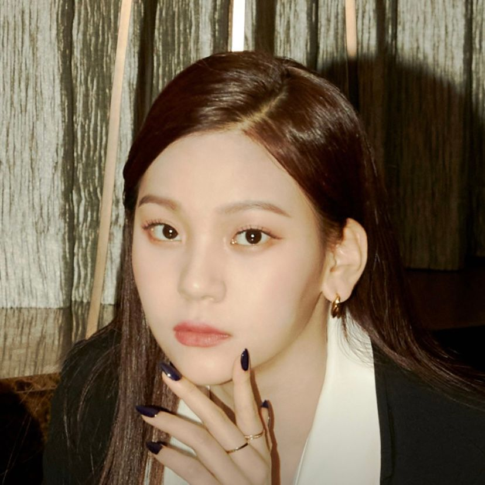

여자친구는 2015년 1월16일에 데뷔를 한 걸그룹이다
여자친구는 소속사가 중소기업임에도 불구하고 많은 업적이 있다
조금만 소개를 하자면 대한민국 걸그룹 역사상 첫 음원 10만 좋아요,최소 1억 스트리밍 달성 등이 있다
여자친구 멤버는 총 6명인데 소개를 하자면
소원(김소정):출생은 1995년 12월 07일이며 역할은 리더이다 소원 인스타그램
예린(정예린):출생은 1996년 08월 19일이며 역할은 리드댄서이다 예린 인스타그램
은하(정은비):출생은 1997년 05월 30일이며 역할은 리드보컬이다 은하 인스타그램
유주(최유나):출생은 1997년 10월 04일이며 역할는 메인보컬이다 유주 인스타그램
신비(황은비):출생은 1998년 06월 03일이며 역할은 메인댄서이다 신비 인스타그램
엄지(김예원):출생은 1998년 08월 19일이며 역할은 서브보컬 엄지 인스타그램

여자친구의 제일 인기있는 곡을 말해보자면